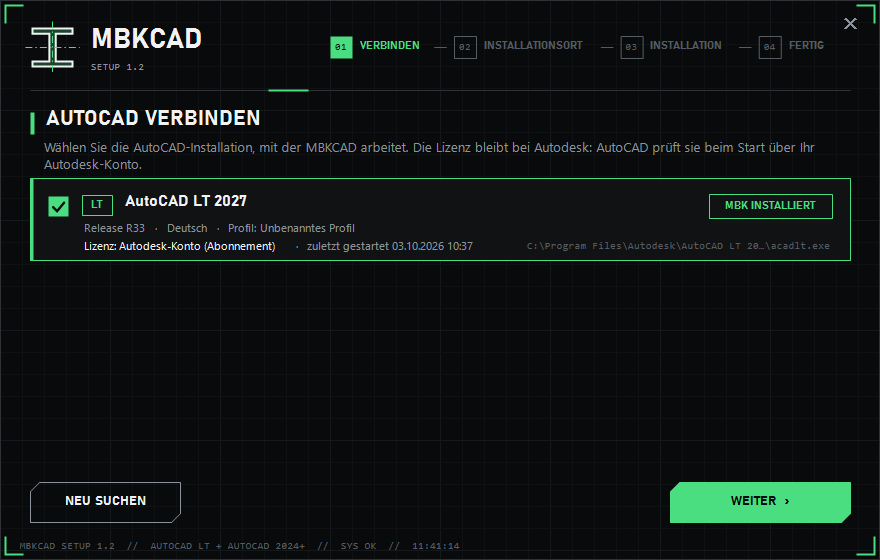
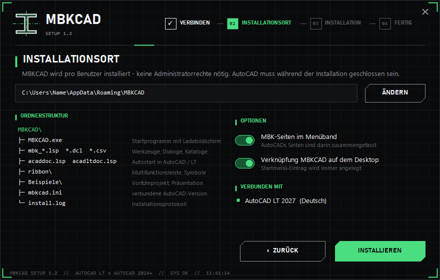
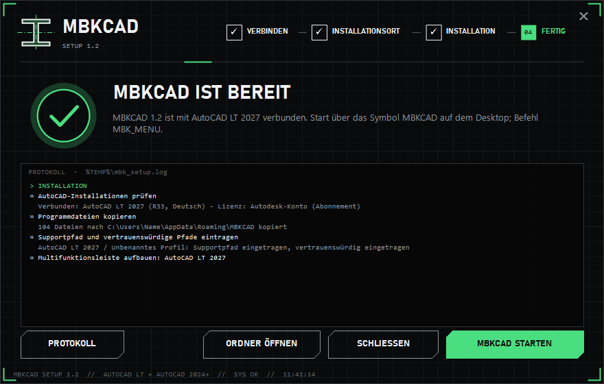
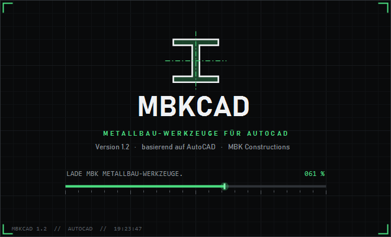

Lizenz wählen
Alle Lizenzen enthalten den vollen Funktionsumfang und alle Updates der Version 1. Eine Lizenz gilt für einen PC (AutoCAD LT oder AutoCAD ab 2024). Zum Ausprobieren gibt es eine kostenlose Testversion für 30 Tage.
Monat
- verlängert sich monatlich
- jederzeit kündbar
- alle Funktionen
Jahr
- 12 Monate, verlängert sich jährlich
- entspricht CHF 31.67 / Monat
- alle Funktionen
Lebenslang
- unbefristet
- Updates der Version 1
- alle Funktionen
Nach der Zahlung kommt die Lizenz mit der Bestätigung per E-Mail – sie wird automatisch ausgestellt. Die Zahlung läuft über einen Zahlungsanbieter (z.B. TWINT, Karte); Zahlungsdaten gelangen nie zu MBKCAD.
Vor dem Kauf: MBKCAD ist ein 2D-Werkzeug für AutoCAD LT / AutoCAD und orientiert sich an Normen – ohne Gewähr. Lesen Sie Pro und Contra, damit Sie wissen, was MBKCAD kann und was nicht. Fragen vorab? Feedback-Seite.
MBKCAD herunterladen
MBKCAD Setup 1.2
Das Setup enthält alle Werkzeuge. Nach der Installation fragt MBKCAD beim ersten Start nach Ihrem Lizenzschlüssel oder startet auf Wunsch die 30-Tage-Testversion – ohne gültige Lizenz bleiben die MBK-Werkzeuge gesperrt. Installation pro Benutzer, ohne Administratorrechte.
Das Setup ist während der Vorschau noch nicht öffentlich. Für einen Beta-Zugang bitte kurz melden.
Diese Seite wurde aus Ihrer MBKCAD-Installation geöffnet – MBKCAD ist auf diesem PC bereits installiert. Der Knopf liefert das Setup aus Ihrem MBKCAD-Ordner, z.B. für einen weiteren PC.
Prüfsumme (SHA-256)
Zum Prüfen in PowerShell: Get-FileHash .\MBKCAD_Setup.exe
Installieren und freischalten
In wenigen Minuten startklar. Halten Sie den Lizenzschlüssel aus der Bestätigungs-Mail bereit – oder starten Sie die 30-Tage-Testversion.
AutoCAD vorbereiten
AutoCAD LT oder AutoCAD (ab 2024) muss installiert sein. Einmal starten, mit dem Autodesk-Konto anmelden und wieder schliessen.
Setup starten
MBKCAD_Setup.exe doppelklicken. Meldet Windows «Der Computer wurde durch Windows geschützt»: auf «Weitere Informationen» und dann «Trotzdem ausführen» klicken – das Setup ist noch nicht digital signiert.
AutoCAD verbinden
Das Setup zeigt die gefundene AutoCAD-Version mit Sprache und Profil. Angehakt lassen und «Weiter» klicken.

Installieren
Speicherort (Vorgabe: Ihr Benutzerordner …\AppData\Roaming\MBKCAD) und Optionen bestätigen, dann «Installieren». Nach weniger als einer Minute meldet das Setup «MBKCAD ist bereit».

MBKCAD starten
«MBKCAD starten» klicken – oder später das neue Symbol MBKCAD auf dem Desktop bzw. im Startmenü verwenden. Am besten AutoCAD immer über dieses Symbol öffnen.

Lizenz freischalten (Anmeldung)
Beim ersten Start erscheint «Lizenz freischalten». Den Lizenzschlüssel aus der Mail einfügen (er beginnt mit MBK1- und ist lang – am besten mit Strg+V einfügen) und «Freischalten» klicken. Die Lizenz wird an diesen PC gebunden, danach startet AutoCAD mit allen MBK-Werkzeugen. Zum Ausprobieren: «30 Tage testen».

Loslegen
Im Menüband erscheinen die Seiten MBK Start, Einfügen, Beschriften, Ansicht, Plan & Ausgabe und Extras. MBK in die Befehlszeile tippen öffnet die Schaltzentrale mit allen Werkzeugen.
Klappt etwas nicht?
- «Kein AutoCAD gefunden» – AutoCAD einmal starten, anmelden, schliessen und im Setup «Neu suchen» klicken.
- «AutoCAD läuft noch» – alle AutoCAD-Fenster schliessen (Zeichnungen vorher speichern) und erneut versuchen.
- «Lizenzschlüssel nicht gültig» – den Schlüssel vollständig aus der Mail übernehmen (Strg+V); Gross- und Kleinschreibung, Leerzeichen und Zeilenumbrüche spielen keine Rolle.
- Neuer PC – die Lizenz ist an einen PC gebunden. Auf dem alten PC in der Eingabeaufforderung MBKCAD.exe /freigeben ausführen, danach auf dem neuen PC freischalten; Fragen dazu über Feedback.
- Entfernen – Windows-Einstellungen › Apps › «MBKCAD» › Deinstallieren. Ihre Zeichnungen bleiben erhalten.